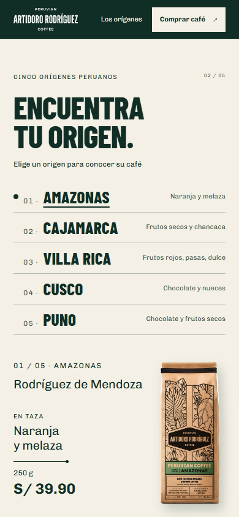
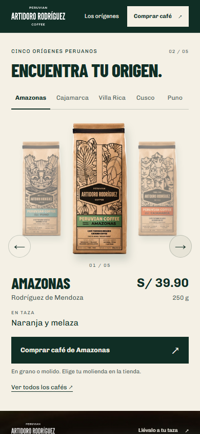
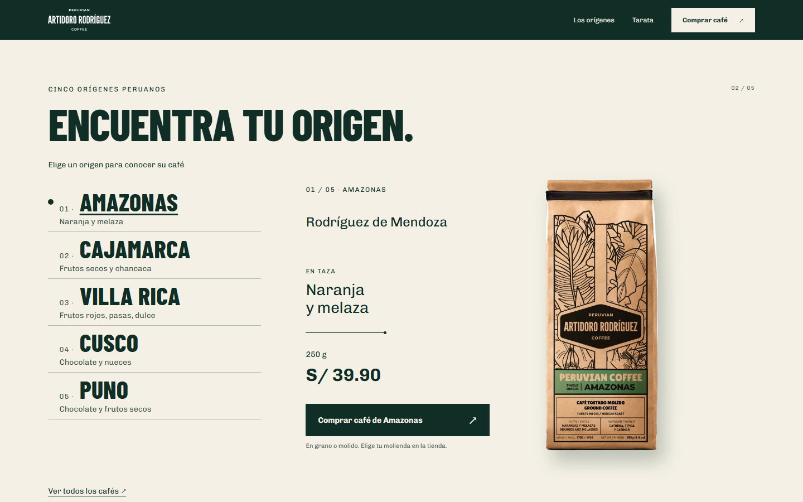
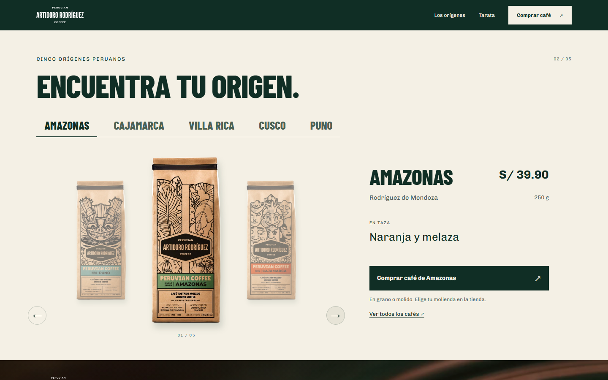
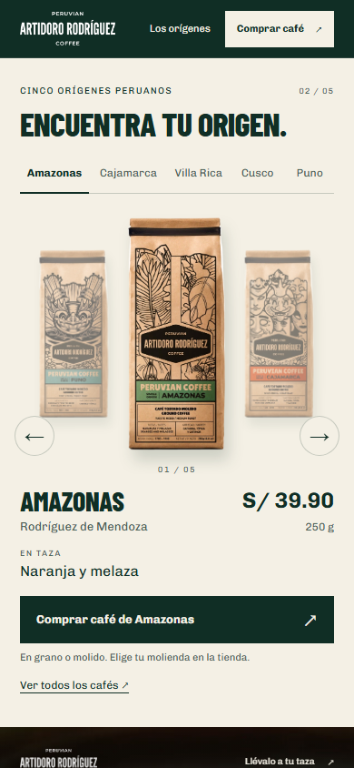
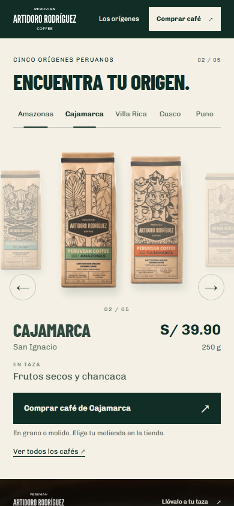
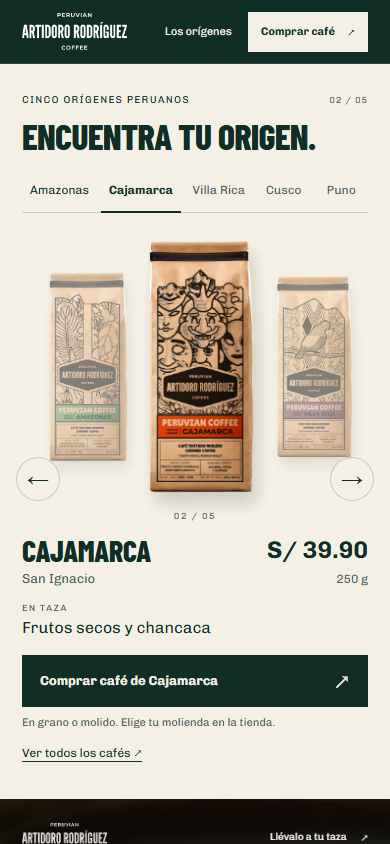
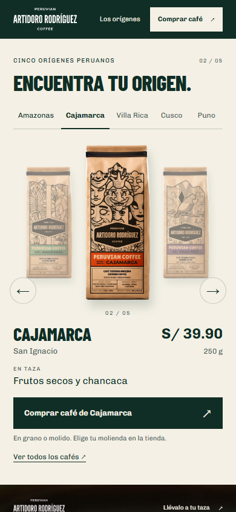

Artidoro / Perú, en profundidad / 02
Elegir un café.
Verlo. Llevártelo.
Carrusel de bolsas y cinco orígenes por nombre. Composición propia en móvil y desktop, selección local y compra visible. Rama feat/origin-selector, sobre 7b122b9. Sin publicar ni hacer commit final.
Móvil · antes / después
390 × 844. La sección pasa de 954 a 735 px. El CTA completo termina en y ≈ 707 px, con la sección alineada bajo la navegación de 64 px.




Desktop · antes / después




Amazonas → Cajamarca
Cuatro capturas durante el cambio. Las bolsas se desplazan durante 320 ms; la ficha cambia cuando la nueva imagen está preparada. El tiempo exacto entre capturas incluye la ejecución del navegador.




Evidencia: Chromium 148, DPR 1; desktop 1440 × 900 y móvil 390 × 844, movimiento activado, bolsas decodificadas. Antes: checkpoint 7b122b9. Después: working tree de esta rama. Gestos táctiles emulados; pendiente revisión en iPhone físico. No es una medición de conversión. Entrega y condiciones de QA.